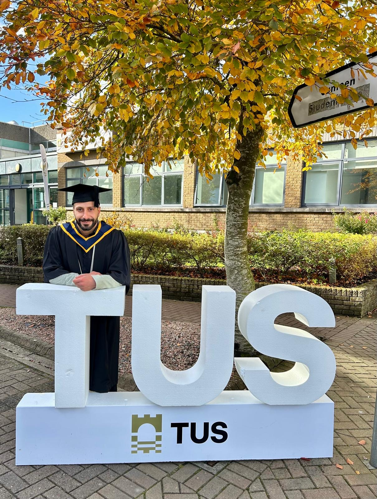
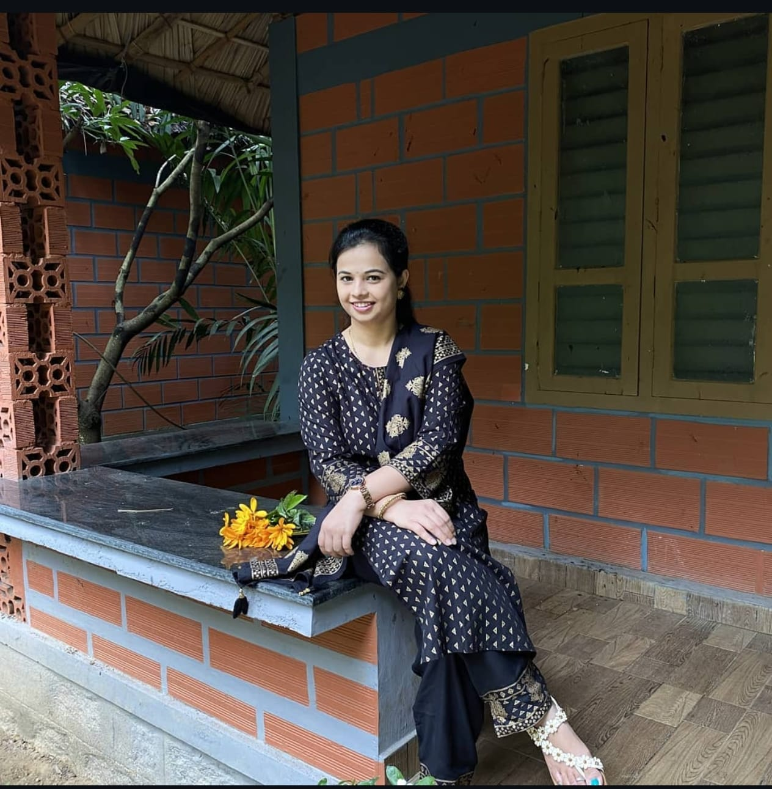
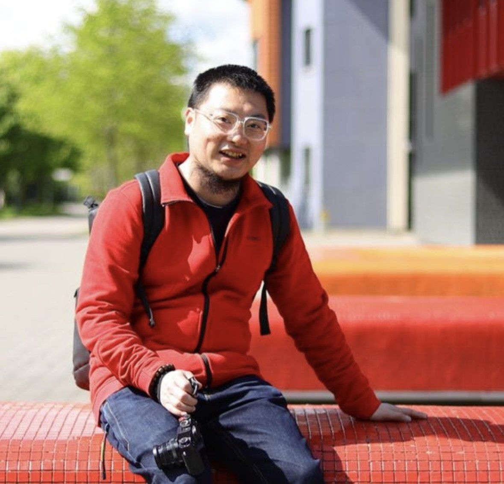

Research Team
The people behind the DepthNav Research project
DepthNav Research is a collaborative MSc project focused on evaluating architecture-driven trade-offs in monocular depth estimation under edge deployment constraints. All team members contributed across the full research workflow, including planning, experimentation, analysis, writing, presentation, and final project delivery.
Supervisor Name Placeholder
PhDProject Supervisor
This section is reserved for the project supervisor. We can later add the supervisor’s name, photograph, title, and a short professional profile here.
Email or profile link can be added later

Taha Aflouk
BScMSc Candidate · Research Team Member
Contributed across the full project lifecycle, including research planning, experiment design, benchmarking, validation, paper writing, poster refinement, website development.
A00300601@student.tus.ie
Priyanka Burkul
BScMSc Candidate · Research Team Member
Contributed across the full project lifecycle, including experimental validation, results interpretation, paper writing, poster development, and collaborative preparation of the final project outputs.
A00335939@student.tus.ieCian Farrell
BScMSc Candidate · Research Team Member
Contributed across the full project lifecycle, including implementation support, benchmarking, validation, paper writing, poster preparation, and collaborative development of the final research outputs.
A00293701@student.tus.ie
Jiyu Li
BScMSc Candidate · Research Team Member
Contributed across the full project lifecycle, including experimental analysis, results interpretation, paper writing, poster development, and collaborative preparation of the final research deliverables.
A00316304@student.tus.ieTechnological University of the Shannon, Athlone Campus
DepthNav Research was developed as part of an MSc project based at TUS Athlone, where the team carried out the research planning, experimentation, analysis, and presentation of results.
Athlone, Co. Westmeath, Ireland